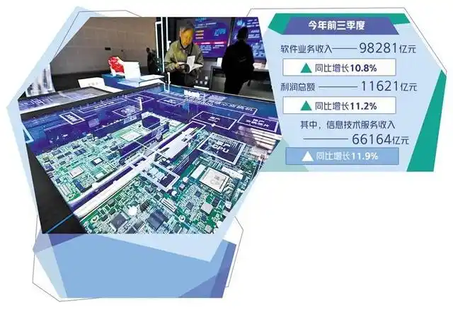

软件业用新创造价值
工业和信息化部数据显示，我国软件和信息技术服务业（以下简称“软件业”）运行态势良好。今年前三季度，软件业务收入98281亿元，同比增长10.8%；利润总额11621亿元，同比增长11.2%；软件业务出口410.3亿美元，同比增长4.2%。
专家表示，今年以来，软件业务收入平稳增长，利润总额增速回升，出口持续向好。软件业加快技术创新和行业应用，正成为培育新质生产力的重要力量。
市场空间持续扩大
前三季度，软件业务收入同比实现两位数增长。对此，赛迪智库信息化与软件产业研究所所长韩健分析，从市场需求端看，随着设备更新等政策红利的不断释放，软件市场空间持续扩大，有效需求得到巩固。从企业供给端来看，软件企业越发重视技术研发和品牌打造，市场竞争力和认可度不断增强；同时，企业更加强调国际竞争力塑造，通过协同出海等方式积极加大国际市场拓展力度，取得一定成效。

第二十六届中国国际软件博览会上，与会嘉宾在博览会设置的软件成果展上参观。新华社记者 赵子硕 摄
业内从业人士及专家认为，在国家层面“数字化转型”“人工智能+”等战略规划和相关政策引导下，软件企业不断深化新技术、新产品在行业的创新应用和成果转化，打造高质量软件产品。同时，随着智能制造、金融科技等领域的市场需求和出海企业的数字化需求不断增加，软件企业通过加强产业链上下游合作、积极拓展国内外市场，不断提升企业竞争力。
从收入构成来看，软件产品和信息技术服务收入占比较大。前三季度，信息技术服务收入66164亿元，同比增长11.9%，占全行业收入的67.3%。其中，基础软件产品、集成电路设计、云计算、大数据服务等业务收入增长率较高。赛智产业研究院院长赵刚分析，原因在于政府和行业大客户加快信息技术应用创新，推动操作系统、数据库等基础软件产品更新换代，国产基础软件市场占有率进一步提升。新能源汽车、智能手机等终端产品对国产芯片需求扩大，带动集成电路设计业务规模增长。人工智能大模型训练需求激增，带动云计算、大数据服务等业务收入增长。
“人工智能领域技术进步不仅带动企业相关业务收入的增长，还带动芯片设计等业态快速发展。前三季度，集成电路设计收入同比增长13.1%，为增长最快的细分领域。随着智能化、云化成为软件产业的确定趋势，预计我国信息技术服务收入将继续稳定增长，占全行业收入的比重将进一步提升。”韩健说。
重点领域加快突破
10月22日晚，华为发布全新的原生鸿蒙操作系统，这是中国首个实现全栈自研的操作系统，代表中国在操作系统领域的重大突破，将带动相关产业升级与创新。华为常务董事、终端BG董事长、智能汽车解决方案BU董事长余承东在发布会上介绍，已有超过1.5万个鸿蒙原生应用和元服务上架，鸿蒙生态设备超过10亿台，鸿蒙操作系统代码已超1.1亿行，注册开发者数量达675万。
操作系统是基础软件的代表，是数字经济的关键基础设施，其发展水平关乎国家安全、产业安全。党的二十届三中全会《决定》提出，抓紧打造自主可控的产业链供应链，健全强化集成电路、工业母机、医疗装备、仪器仪表、基础软件、工业软件、先进材料等重点产业链发展体制机制，全链条推进技术攻关、成果应用。
今年以来，基础软件、工业软件等重点领域加快突破，形成一批标志性成果，部分新兴领域达到国际先进水平。“自2023年以来，人工智能大模型技术取得突破性进展，带动基础软件迭代升级，面向大模型应用的分布式计算、矢量数据库、AI运行监控、网络和数据安全等基础软件加快产品创新。基础软件在政府部门以及金融、电信、能源等行业应用不断深入，前三季度基础软件产品收入1377亿元，同比增长9.6%。”赵刚说。
前三季度，工业软件产品收入2104亿元，同比增长8.8%。随着产业结构不断优化，面对“卡脖子”挑战，我国在智能产品研发设计、计算机辅助工程、智能制造等领域加大自主创新力度，中高端工业软件产品不断取得突破，有力支撑制造业数字化、智能化转型。国产工业软件市场占有率持续提升，受工业领域设备更新政策等利好因素影响，国产工业软件市场占有率稳步提升。
工业软件应用效能也不断提高。韩健介绍，截至今年三季度，制造业重点领域企业数字化研发设计工具的普及率、关键工序数控化率分别达到82%和64.6%。面向重点领域典型应用场景，推出了一批高水平的软件解决方案，有力推动数字化转型，赋能作用日益显现。
人工智能加速创新
软件业加快技术创新和行业应用，正成为培育新质生产力的重要力量。随着通用大模型、行业大模型技术的发展，软件业加速推进智能化转型。截至2024年7月底，我国备案的生成式人工智能服务已经达到197个，软件企业普遍使用人工智能大模型提升代码生成、视频制作、数字人服务等能力。
360集团创始人周鸿祎认为，过去大模型发展主要培养的是快思考能力，即能够快问快答，但不具备复杂逻辑推理能力。美国人工智能研究公司OpenAI近期发布的o1模型引入思维链技术，通过强化学习让大模型拥有了类似人类的慢思考能力。360集团在此之前就推出采用慢思考架构的专家协同方法，通过集合多个大模型组成“幕僚团”，发挥不同模型的长处，实现解决复杂问题的能力。
软件是数字技术的关键载体。业内专家分析，数字生产力是新质生产力的重要组成部分。在大模型等数字技术赋能下，新一代软件实现更广连接、更强智能、更高敏捷，推动数字化价值跃升，进一步加快释放数字生产力，助力企业向全流程的数字企业、全连接的协同企业、全智能的未来企业迈进。
软件为科技创新提供基础支撑。韩健分析，一方面，软件本身是科技创新的通用技术。互联网、云计算、大数据、人工智能、区块链、数字孪生等新一代信息技术的关键核心都是软件。另一方面，软件推动了众多科技领域的发展和突破。我国基因测序、干细胞研发等重要原创性科技突破，悟空、墨子等系列科学实验卫星的成功发射，以及载人航天、探月工程、深地探测、国产航母等战略性高技术创新成果的取得，都离不开软件的创新和驱动。
“尽管软件业面临着经济发展的不确定性、用户采购预算缩减、部分企业亏损额扩大等诸多问题，但整体来看，软件业仍是技术创新活跃、增长动力充足、市场规模稳定的行业之一。全年软件业增速预计有所放缓，但仍将保持10%以上的增速，人工智能、云计算、大数据、集成电路设计、直播电商等细分领域将保持较高增长率。”赵刚说。
韩健认为，以云计算、大数据、人工智能等为代表的软件新兴技术创新，将持续推动软件技术、模式、生态变革，不断催生业务新增长点，带动业务收入持续提升。此外，随着国家重大战略和重点领域安全能力建设相关项目的实施，重点行业对软件产品和服务的需求有望得到释放，预计2024年软件业务收入和利润将保持两位数稳定增长。